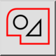
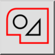
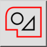
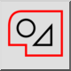

Zaznacz kontur
Pasek narzędziowy / ikona:
 

Menu: Zaznaczanie > Zaznacz kontur
Skrót: T, C
Polecenia: selectcontour | tc
Jest to tłumaczenie automatyczne.
Pasek narzędziowy / ikona:
 

Menu: Zaznaczanie > Zaznacz kontur
Skrót: T, C
Polecenia: selectcontour | tc
Zaznacza lub odznacza jednostki, które są ze sobą połączone i tworzy kontur (zamknięty lub otwarty).
Alternatywnie, można kliknąć dwukrotnie i podmiot, aby wybrać go i wszystkie podłączone podmioty.